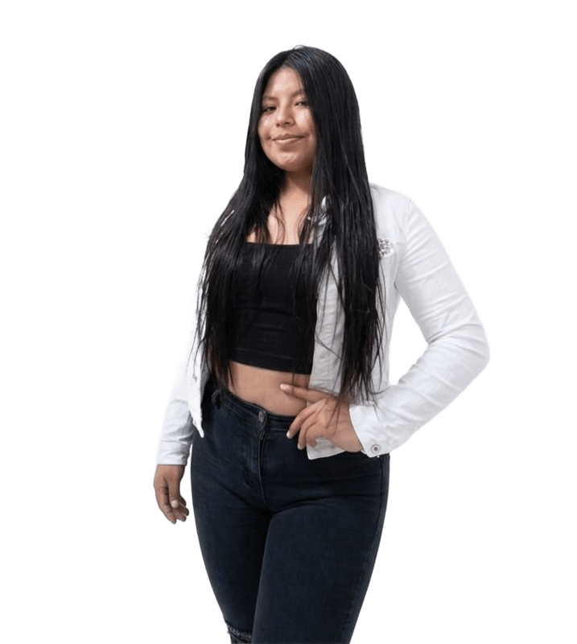

Eleve tu negocio digital a otro nivel con un Front-end de calidad!
¡Hola! Soy desarrolladora Frontend especializada en la creación de interfaces modernas, responsivas y enfocadas en la experiencia del usuario. Tengo conocimientos sólidos en C#, desarrollo de aplicaciones de escritorio con WPF y bases de datos. Me apasiona transformar ideas en soluciones digitales funcionales.


